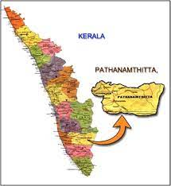
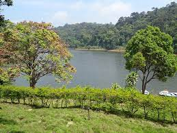
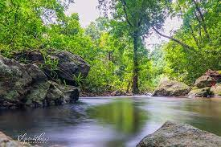

Kottayam is a town in south-central Kerala, sandwiched between the Vembanad Lake and the Kerala hill-country. Best known as a hub of trade and commerce, Kottayam is also a centre for education and literature, and as a centre of Kerala's large Christian population. Kottayam is an important commercial centre of Kerala, India, thanks to its strength as a producer of cash crops. Most of India's natural rubber originates from the acres of well-kept plantations of Kottayam, also home to the Rubber Board, One of the country's primary commodities board
Pathanamthitta
General Information
Area: 23.50 km2
Population:37,538
Elevation:31 m (102 ft)
Official Language: Malayalam, English

Gavi
One of the most beautiful places in India, Gavi is a small village tucked between tea estates and wide and dense forests. A unique project in itself, the place is a model of eco-tourism site bringing to the world its spellbinding abundance in flora and fauna. Gavi is situated some 14 km away from the famed Periyar Tiger Reserve and is heaven on Earth, quite literally.

Aranmula
Aranmula is a place mainly known for its expert craftsmanship and snake boat race organized on the final day of Onam Festival. The most renowned art of metal mirror of Aranmula Kannadi has its roots originated from this place.

Konni Forest Reserve
This place is considered to be the equivalent to an elephant's cage. The reason being is that the main attraction of the region is a massive wooden cage where elephant are trained.